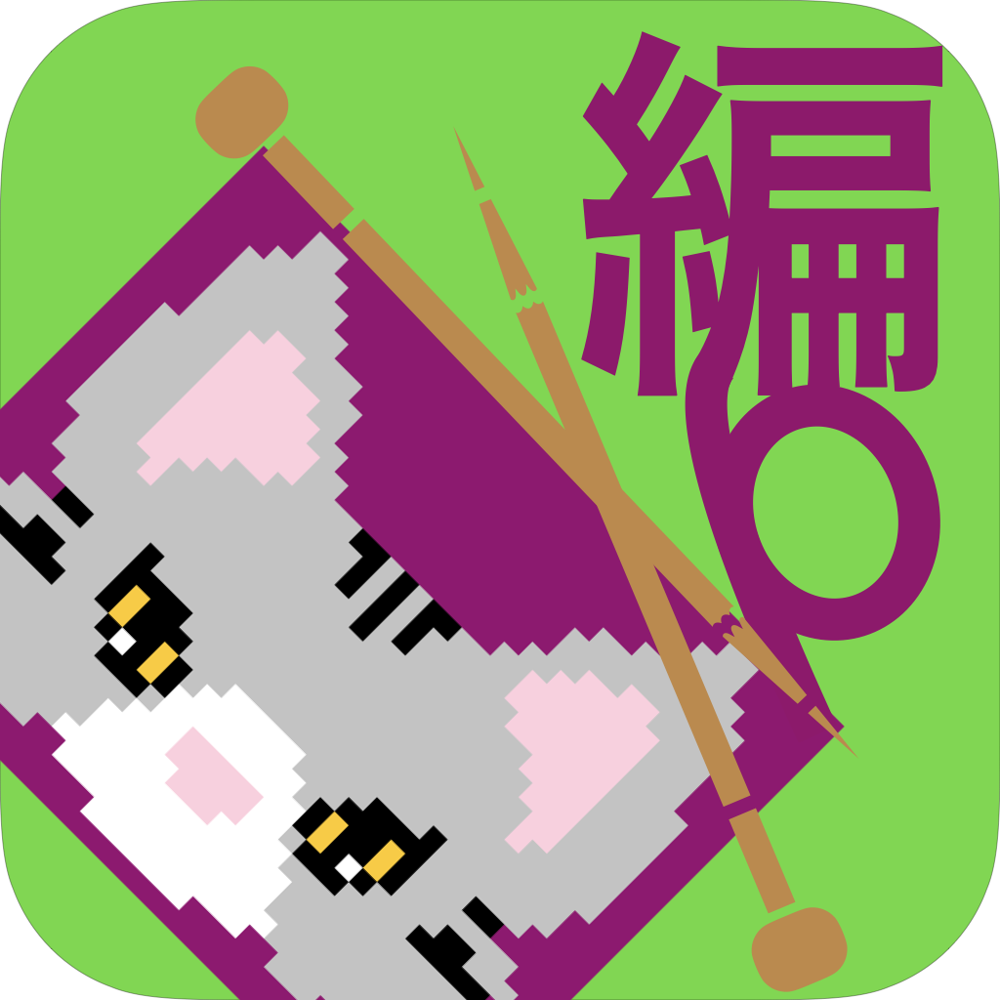

イラスト手編み支援アプリ
編模様(あもーよ)はイラスト手編みを支援するアプリです。オリジナルの編み図を作り、色が変わるまでの数が表示されることで編み間違いを減らすことができます。自分だけの作品を、時間を忘れて編み続けてしまうほど楽しく簡単に作れるようになります。

編模様(あもーよ)
編模様(あもーよ)はイラスト手編みを支援するアプリです。オリジナルの編み図を作り、色が変わるまでの数が表示されることで編み間違いを減らすことができます。自分だけの作品を、時間を忘れて編み続けてしまうほど楽しく簡単に作れるようになります。
イラスト手編み支援アプリ